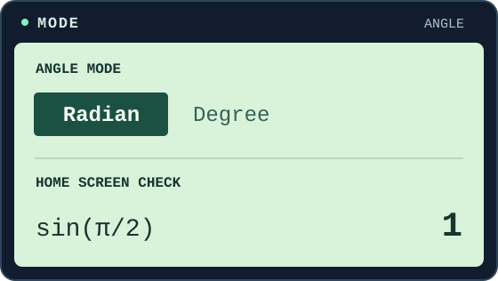

01 / Setup
设置弧度，画出函数
Set the angle mode to radians. Then graph a function.
- MODE → 用方向键选 RADIAN → ENTER。
- 2nd MODE（QUIT）回主屏幕。算 sin(π/2) 自检，结果应为 1；用 2nd ^ 输入 π。
- Y= 输入函数，用 X,T,θ,n 输入 x；按 ZOOM 6（ZStandard）快速画图，或用 WINDOW 自定范围，再按 GRAPH。
图像不见了？先看窗口范围和该函数是否已开启绘图，再检查输入。
